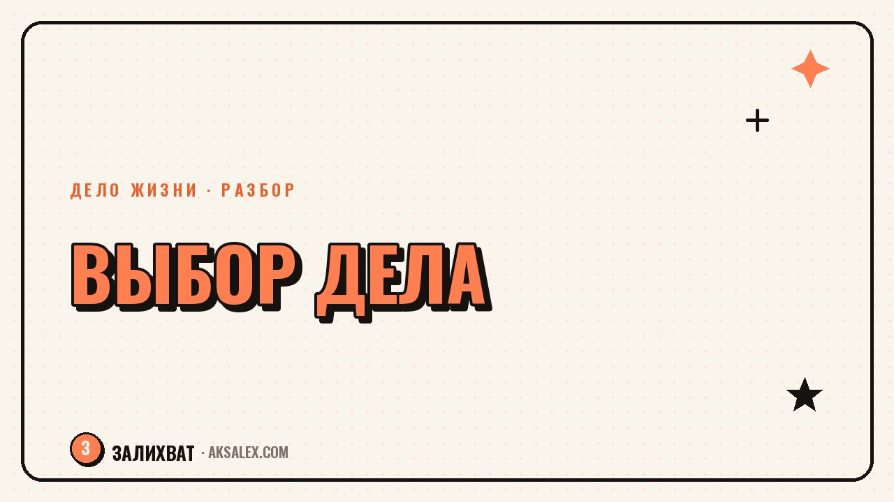

Если умеешь много, а выбрать одно дело не можешь

Ты пишешь неплохие тексты, разбираешься в дизайне, умеешь договариваться с людьми и ещё немного шьёшь по выходным. Вопрос 'а чем ты в итоге занимаешься' ставит в тупик, потому что ответа на один пункт у тебя нет. Дело не в лени и не в несобранности - у некоторых людей интересов правда больше одного, и выбирать между ними по принципу 'оставь только лучшее' не работает. Разберём, как сузить выбор без того, чтобы хоронить остальные способности.
Почему выбор между способностями даётся так тяжело
Когда умеешь одно дело хорошо, выбор очевиден: делаешь его. Когда умеешь несколько разных вещей примерно на одном уровне, любой выбор ощущается как потеря остальных. Мозг честно взвешивает варианты и не находит перевеса - отсюда и подвешенное состояние, которое снаружи выглядит как нерешительность.
Есть и второй слой: страх, что выбранное дело окажется не тем, а время на остальные уже упущено. Этот страх редко проговаривают прямо, но именно он держит в режиме 'подумаю ещё' месяцами.
Что здесь важно понять сразу
- Несколько сильных сторон - это ресурс, а не недоделанная личность
- Выбор дела сейчас не означает отказ от остальных навыков навсегда
- Нерешительность в такой ситуации не равна слабой воле
Миф, который мешает больше остальных
'Нужно выбрать одно дело и посвятить ему жизнь' - установка, которая хорошо звучит в историях успеха, но плохо описывает реальных людей. Многие, кого называют экспертами в одной области, на деле прошли через несколько направлений, но публично рассказывают только о финальном.
Один психолог-карьерный консультант формулирует это так: 'Вопрос не в том, какое дело у тебя единственно верное. Вопрос в том, с каким из нескольких ты готов пожить следующий год и проверить на практике'.
Разница в формулировке меняет всё. 'Выбрать навсегда' парализует, потому что ставка кажется огромной. 'Выбрать на ближайший год, чтобы проверить' снижает ставку до размера, с которым реально работать.
Разбор по шагам: выписать и найти общий знаменатель
Прежде чем выбирать, стоит честно увидеть всю картину, а не держать её в голове обрывками. Это упражнение занимает вечер, но экономит месяцы метаний.
Как это сделать
- Выпиши все дела, в которых ты хорош, без фильтра 'это не считается'
- Рядом с каждым отметь, откуда энергия: сам процесс, результат или благодарность людей
- Поищи, что повторяется во всех пунктах - часто это не навык, а роль: ты объясняешь, организуешь, создаёшь с нуля
- Спроси себя, какое из дел ты продолжал бы и без оплаты - это честный маркер интереса
Общий знаменатель часто оказывается шире, чем кажется. Если тебе нравится и писать тексты, и наводить порядок в хаосе чужих проектов, общим может быть не 'тексты' и не 'организация', а желание превращать беспорядок в понятную структуру - а это применимо в разных профессиях.
Критерии, которые сужают выбор без сожалений
Когда все варианты кажутся одинаково интересными, помогает оценивать не 'люблю больше', а более конкретные параметры.
| Критерий | Вопрос к себе |
|---|---|
| Энергия после дела | После этого занятия у тебя прибавилось сил или они кончились |
| Обратная связь | За это тебя хвалят чаще, чем за остальное, или только терпят |
| Длина пути | Сколько времени нужно, чтобы начать получать от этого хоть что-то |
| Совместимость | Можно ли пробовать это параллельно с текущей работой, без увольнения |
Как попробовать несколько направлений без хаоса
Не обязательно резать лишнее сразу. Можно взять два направления, которые набрали больше баллов по критериям выше, и дать каждому реальную проверку - не мысленную, а в виде конкретного действия с результатом.
- Выбери одно небольшое задание в каждом направлении на ближайшие две недели
- Договорись с собой заранее, по какому признаку поймёшь, что стоит продолжать
- Не сравнивай промежуточные результаты между направлениями - сравнивай каждое с тем, где ты был месяц назад
- Дай себе срок на эксперимент, а не бросай через три дня, если не пошло сразу
Что делать, если после проверки выбор так и не очевиден
Бывает, что оба направления после месяца пробы всё ещё держатся на равных. Это не провал метода - значит, оба и правда подходят, и дальше решает не анализ, а практика: выбери то, где быстрее появится первый результат, который можно показать другим людям.
Первый видимый результат почти всегда расставляет приоритеты сам, потому что к нему приходит обратная связь - а на неё опираться куда надёжнее, чем на внутренние ощущения в вакууме.
Частые вопросы
Нормально ли, что способностей много, а любимого дела одного нет?
Да, это встречается часто и не является проблемой, которую нужно срочно решать. Проблема начинается там, где из-за этого человек месяцами не делает ничего, боясь ошибиться с выбором.
Как выбрать одно дело, если все кажутся одинаково интересными?
Сравнивай не интерес, а энергию после занятия, скорость первого результата и обратную связь от людей. Эти критерии точнее, чем попытка угадать, что нравится больше.
Можно ли совмещать несколько направлений без выгорания?
Можно, если пробовать их по очереди короткими спринтами, а не вести все одновременно на полную мощность. Параллельная проверка двух направлений работает, если на каждое выделено отдельное ограниченное время.
Что если через месяц пробы так и не ясно, что выбрать?
Это не значит, что метод не сработал - оба направления могут и правда подходить. В такой ситуации выбирай то, где быстрее появится результат, который можно показать другим и получить обратную связь.
Стоит ли бояться, что выбор окажется неправильным?
Выбор дела на ближайший год - это не приговор на всю жизнь, его можно пересмотреть после реальной проверки. Страх ошибиться чаще держит на месте сильнее, чем сама возможная ошибка.
Раз тема оказалась полезной, вот что почитать следующим. Нейросеть составляет меню на неделю и список покупок за пару минут - показываем, как это сделать правильно.
Читать статью →а не вручную